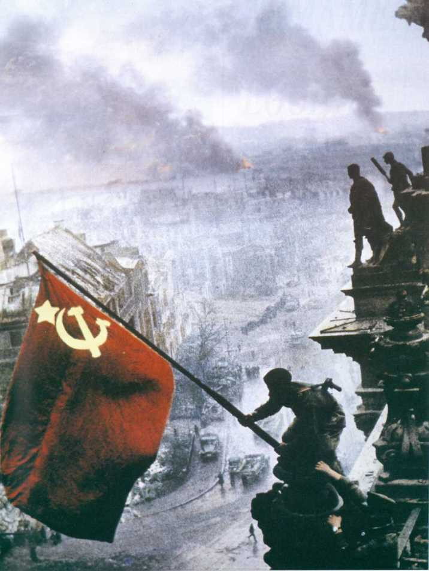

古代文明
古埃及文明：大约公元前3100年左右，古埃及文明在尼罗河流域兴起。它以其金字塔、象形文字和法老制度而闻名。 美索不达米亚文明：位于现今的伊拉克地区，美索不达米亚是最早的城市文明之一，包括苏美尔、阿卡德和巴比伦等城邦。它发明了楔形文字和法典。 印度河流域文明：大约公元前2600年左右，印度河流域文明在现今的巴基斯坦和印度北部地区兴起。它以其城市规划和排水系统而著称。 古中国文明：约公元前2070年，中国最早的历史记载的朝代是夏朝，随后是商朝和周朝。中国古代文明以其青铜器、甲骨文和哲学思想而闻名。 古希腊文明：公元前8世纪左右，古希腊文明在地中海地区兴起，以其哲学、文学、艺术和政治制度（如民主制）而闻名。 古罗马文明：公元前8世纪，古罗马文明在意大利半岛兴起。它以其法律体系、建筑（如罗马斗兽场和水道桥）和军事征服而著称。 玛雅文明：在中美洲，玛雅文明以其复杂的历法、建筑和象形文字而闻名，大约在公元前2000年左右兴起。 印加文明：在南美洲，印加文明在15世纪达到顶峰，以其道路系统、农业技术和社会组织而著称。 阿兹特克文明：同样位于中美洲，阿兹特克文明以其首都特诺奇蒂特兰（现在的墨西哥城）的规模和复杂性而闻名。 古代非洲文明：包括埃塞俄比亚的阿克苏姆帝国、西非的加纳帝国、马里帝国和桑海帝国等。

- 伯里克时代（445 BC–429 BC）改革
- 第二次伯罗奔尼撒战争：雅典对斯巴达
- 雅典的鼠疫（公元前430年）
中世纪
中世纪，也被称为中世纪时期或中古时代，是欧洲历史上的一个时期，大约从公元5世纪西罗马帝国的衰落开始，一直持续到15世纪文艺复兴时期的到来。这个时期通常被划分为三个阶段：早期中世纪（约公元500-1000年）、中世纪盛期（约公元1000-1300年）和晚期中世纪（约公元1300-1500年）。以下是中世纪的一些主要特点和事件： 封建制度：中世纪的欧洲社会结构以封建制度为基础，这是一种基于土地所有权和军事服务的等级制度。领主授予土地给骑士，骑士则为领主提供军事服务。 宗教影响：基督教在中世纪欧洲占据主导地位，教会在政治、社会和文化生活中发挥着重要作用。教皇和主教拥有广泛的权力和影响力。 城堡和骑士文化：城堡是中世纪欧洲的标志性建筑，它们不仅是军事防御工事，也是领主的居住地。骑士文化强调勇敢、忠诚和荣誉。 十字军东征：从11世纪到13世纪，欧洲的基督教国家组织了一系列军事远征，目的是夺回圣地耶路撒冷，这些被称为十字军东征。 学术和教育：尽管中世纪早期的教育和学术活动相对受限，但随着时间的推移，修道院和大教堂学校开始教授文学、哲学和神学。 经济和贸易：中世纪的经济以农业为主，但随着时间的推移，城市开始兴起，贸易逐渐发展。意大利的城邦如威尼斯和佛罗伦萨成为重要的贸易中心。 艺术和建筑：中世纪艺术以宗教为主题，哥特式建筑是这一时期的代表性建筑风格，以其高耸的尖顶、彩色玻璃窗和复杂的雕刻而闻名。 黑死病：14世纪中叶，黑死病（鼠疫）席卷欧洲，导致大量人口死亡，对社会结构和经济产生了深远影响。 百年战争：14世纪和15世纪，英格兰和法国之间爆发了一系列战争，被称为百年战争，这场战争最终以法国的胜利结束。 文艺复兴的萌芽：15世纪，随着对古典文化的重新发现和对人文主义思想的探索，文艺复兴运动在意大利开始兴起，标志着中世纪的结束和现代时代的开始。

- 君士坦丁堡建立（公元330年）
- 基督教成为罗马国教（公元391年）
- 罗马帝国分裂（公元395年）
现代历史
现代历史通常指的是从大约1500年左右开始，一直延续到今天的历史时期。这个时期以一系列重大的全球性变革为特征，包括科学革命、工业革命、政治革命、殖民扩张和去殖民化、世界大战、冷战以及全球化等。以下是现代历史中的一些重要事件和趋势： 文艺复兴：14世纪到17世纪，欧洲经历了一场文化和知识的复兴，强调个人主义、人文主义和对古典文化的重新评价。 科学革命：16世纪到17世纪，科学方法的发展，如伽利略和牛顿的贡献，为现代科学奠定了基础。 宗教改革：16世纪，马丁·路德和其他宗教领袖发起的宗教改革运动，导致了基督教的分裂和新教的产生。 大航海时代：15世纪到17世纪，欧洲的海上探险家如哥伦布、达·伽马和麦哲伦开启了新航路，促进了全球贸易和文化交流。 启蒙运动：17世纪到18世纪，理性主义和批判性思维的兴起，对政治、社会和宗教传统提出了挑战。 美国独立战争：1775年到1783年，美国13个殖民地反抗英国统治，最终赢得独立。 法国大革命：1789年，法国爆发了推翻君主制的革命，引发了欧洲范围内的一系列政治变革。 工业革命：18世纪末到19世纪，以蒸汽机的发明和应用为标志，工业革命极大地提高了生产效率，改变了社会结构。 殖民主义和帝国主义：19世纪到20世纪初，欧洲列强在全球范围内建立殖民地，对被殖民地进行经济和文化控制。 世界大战：20世纪初，第一次世界大战（1914-1918年）和第二次世界大战（1939-1945年）导致数百万人死亡，重塑了全球政治格局。 冷战：1947年到1991年，美国和苏联之间的意识形态对立和军备竞赛，最终以苏联解体和冷战结束。 去殖民化：20世纪中叶，许多殖民地国家争取并赢得独立，形成了今天许多新兴国家。 全球化：20世纪末到21世纪，经济、文化、技术和信息的全球流动加速，促进了国际合作和竞争。 信息技术革命：20世纪末到21世纪，计算机和互联网的普及，极大地改变了人们的工作、学习和交流方式。 环境和气候变化：21世纪，全球变暖和环境退化成为全球性挑战，促使国际社会寻求可持续发展的解决方案。
- 万隆会议
- 十月革命
- 巴黎和会